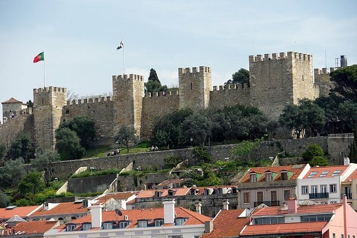
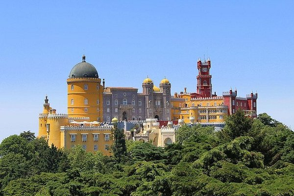
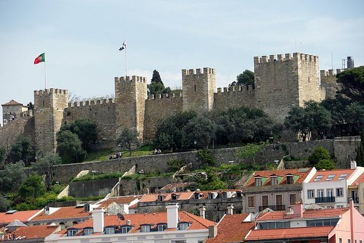
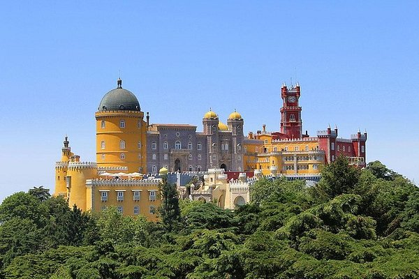

Informação
| Demografia | População | 175.135 hab |
| Densidade populacional | 7.362 hab/km² | |
| Geografia | Área | 23,77 km² |
| Região | Lisboa | |
| País | Portugal | |
| Website | www.cm-amadora.pt | |
Factos sobre a Amadora
- Município mais pequeno de Portugal continental: Com apenas 23,77 km², a Amadora é o município mais pequeno em área do continente, mas um dos mais densamente povoados.
- Origem recente: A Amadora só se tornou oficialmente um município em 1979, quando se desmembrou do concelho de Oeiras.
- Diversidade cultural: A cidade é conhecida pela sua diversidade cultural, sendo lar de muitas comunidades de imigrantes, principalmente de países africanos de língua portuguesa, como Cabo Verde, Angola e Guiné-Bissau.
- Indústria e inovação: A Amadora tem um forte legado industrial e tecnológico, tendo sido sede de importantes fábricas e empresas, como a fábrica da Siemens.
- Ligação ao mundo da banda desenhada: A cidade acolhe anualmente o Festival Internacional de Banda Desenhada da Amadora, um dos mais importantes eventos de BD em Portugal, que atrai artistas e fãs de todo o mundo.